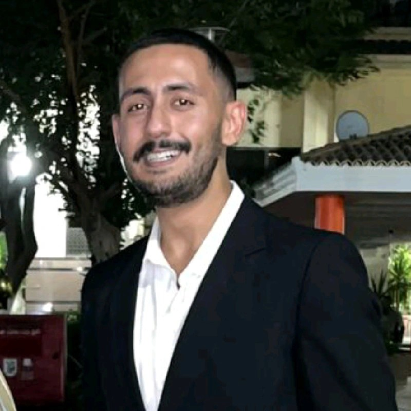

Youssef Hassan
My name is Youssef Mohamed, and I am a proud graduate of the Clinical Pharmacy program at Cairo University. I completed my studies with top grades, earning straight A’s, and developed a strong academic foundation in healthcare and scientific research. While I was deeply engaged in the pharmacy field, I often found myself drawn to technology. I was curious about how websites worked, how software was built, and how digital tools could solve real-world problems. This curiosity slowly grew into a passion. After graduation, I started exploring web development seriously. I began with the fundamentals: HTML and CSS. I loved how these simple building blocks could be used to create structured, styled web pages. It felt like building something out of nothing — and I was hooked. I then moved on to JavaScript to bring interactivity to my pages. Learning JavaScript opened my eyes to the dynamic side of web development. I followed online tutorials, practiced daily, and built small projects to test my understanding. As I gained confidence, I wanted to explore the back-end. I started learning Python and SQL, then moved to frameworks like Node.js and Express. I also began studying databases and APIs to understand how data is managed and served to users. My goal now is to become a full-stack web developer — someone who can build complete applications from start to finish. I want to be able to design interfaces, write logic, and connect everything with reliable databases and server-side tools. Shifting from pharmacy to tech wasn’t easy, but my background taught me discipline, persistence, and problem-solving — all of which help me in coding. I believe that my analytical mindset and attention to detail give me a unique edge in this field. This is just the beginning of my journey. I am committed to continuous learning, building real-world projects, and contributing to meaningful digital solutions. With every line of code, I am moving one step closer to becoming a skilled, well-rounded full-stack developer. ting from clinical pharmacy to tech hasn’t been easy, but it’s been incredibly rewarding. My background helps me stay disciplined, organized, and analytical — traits that serve me well in programming. I know I still have a lot to learn, but I’m motivated and ready to keep going until I reach my goal.
|